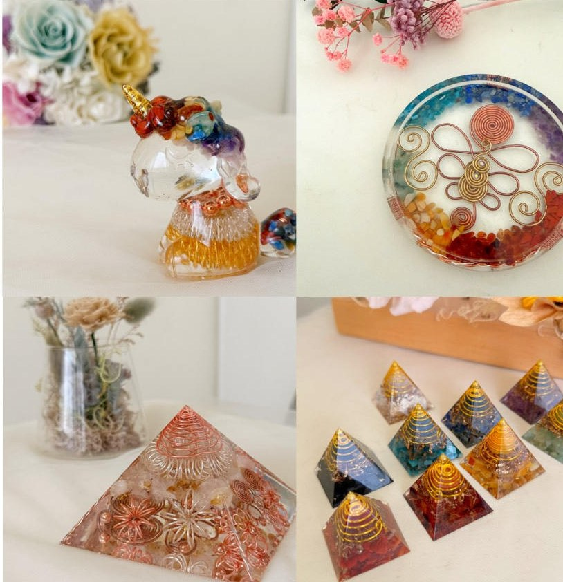

奧剛、奧根、Orgonite——為什麼寫法這麼多？
這幾個詞指的是同一件事。英文原字是 Orgonite，中文沒有官方譯名， 音譯就出現了分歧：有人寫「奧剛」，有人寫「奧根」， 也有人稱它「奧剛石」或「能量塔」。
如果你搜尋時找不到想要的資訊，換一種寫法通常就有了。
Guide to Orgonite
第一次聽到「奧剛」，多數人的反應是：這兩個字很陌生，
東西看起來像水晶和樹脂做的擺飾。
這一頁把常見的疑問一次講清楚——它是什麼、名字為什麼有好幾種寫法、
由什麼做成、怎麼挑、怎麼擺。

這幾個詞指的是同一件事。英文原字是 Orgonite，中文沒有官方譯名， 音譯就出現了分歧：有人寫「奧剛」，有人寫「奧根」， 也有人稱它「奧剛石」或「能量塔」。
如果你搜尋時找不到想要的資訊，換一種寫法通常就有了。
Orgonite 這個字來自 orgone。這個概念由奧地利精神分析學家 威廉・賴希（Wilhelm Reich，1897–1957）在 1930 至 40 年代提出， 他主張宇宙間存在一種普遍的生命能量。
賴希的理論從未被主流科學界接受。而我們今天看到的奧剛—— 樹脂包覆金屬與水晶的固態成品——是 2000 年前後才出現的形式， 由後來的創作者發展而成，名稱沿用了 orgone 的字根。
換句話說：概念的歷史很長，但實體的奧剛是相當年輕的工藝。
三種材料，缺一不可：
其中金屬與樹脂的配置比例是最常被討論的環節， 比例拿捏會直接影響成品的樣貌與結構。 銅線的螺旋纏繞是另一個關鍵，它同時影響結構強度與視覺層次。

| 形狀 | 特徵 |
|---|---|
| 金字塔 | 最經典的形式，尺寸從 3 公分到 10 公分以上都有 |
| 能量塔（尖塔） | 細長型，佔空間小 |
| 杯墊、置物盤 | 平面圓形，實用性最高 |
| 隨身小件 | 吊墜、口袋型 |

撇開能量的說法不談，單就工藝品質，有幾個看得見的判斷點：
奧剛在市場上常被賦予各種能量與身心方面的說法。這些說法目前沒有科學實證支持， 我們也不會宣稱它具有任何醫療或健康效果。
我們的看法比較單純：它是一件親手做的東西，材料真實、過程專注， 完成後放在家裡看得到、摸得到。那份感受是實在的， 不需要靠誇大的說法來支撐。
買現成快，但你不會知道裡面用了什麼、比例怎麼配、為什麼那樣排。
自己做的差別在於：你能決定顏色、決定礦石、決定尺寸。 而且做完之後，你看那件作品的眼神會不一樣—— 它不是買來的裝飾，是你花了三小時完成的東西。
水晶是天然礦石。奧剛是人工製作的複合材料，水晶只是其中一種成分，還包含樹脂與金屬。
可以。體驗班就是為零基礎設計的，工具與材料都由教室提供。
未固化的樹脂有氣味，需要通風操作；完全固化後即為穩定的固體。課堂上會說明正確的操作方式與防護。
灌模本身不久，但樹脂需要時間固化。體驗班 3 小時可完成兩座 5 公分金字塔的製作程序。
正常擺放不會。主要的變化是長期曝曬導致的泛黃，以及摔落造成的碎裂。